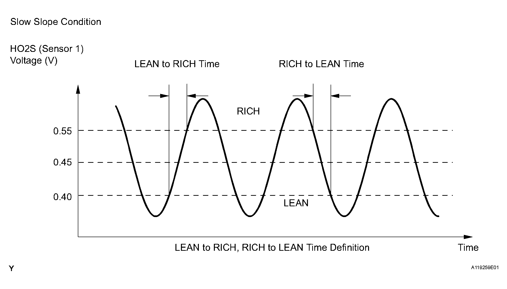

Monitor Description

Courtesy of © TOYOTA, LICENSE AGREEMENT TMS1002The Heated Oxygen (HO2) sensor detects the oxygen levels in the exhaust gas and transmits this information to the ECM, which uses it to maintain the air-fuel ratio as close as possible to stoichiometric levels. This optimizes the three-way catalytic converter's ability to purify the exhaust gases.
The sensor element is made of platinum electrode and solid electrolyte (zirconia element), and includes an integrated heating element. The inner surface of the sensor element is exposed to the outside air and the outer surface is exposed to the exhaust gases.
The HO2 sensor generates a waveform voltage signal that oscillates between 0.1 V and 0.9 V in accordance with the oxygen concentration in the exhaust gas. The HO2 sensor has a characteristic whereby this output voltage changes dramatically in the vicinity of the stoichiometric air-fuel ratio.
When the output voltage of the HO2 sensor is 0.55 V or more, the ECM determines that the air-fuel ratio is rich. When it is 0.40 V or less, the ECM determines that the air-fuel ratio is lean.
The ECM also monitors the response of the HO2 sensor. If the response time of the output changes from rich to lean or vice versa becomes longer than preset thresholds, the ECM interprets this as a malfunction in the HO2 sensor, illuminates the MIL and sets the DTC (2 trip detection logic).